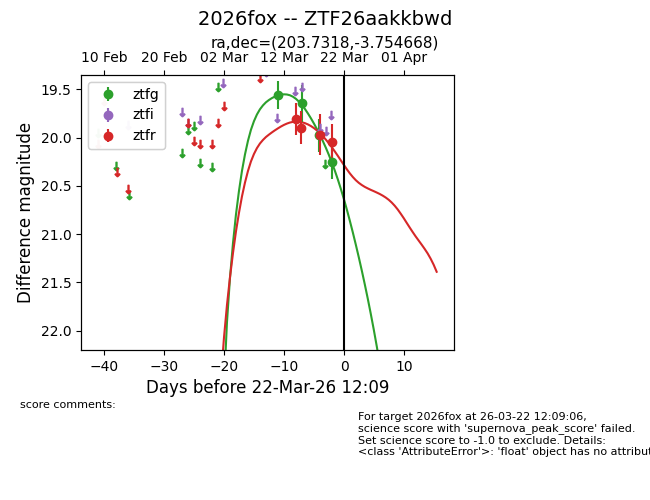
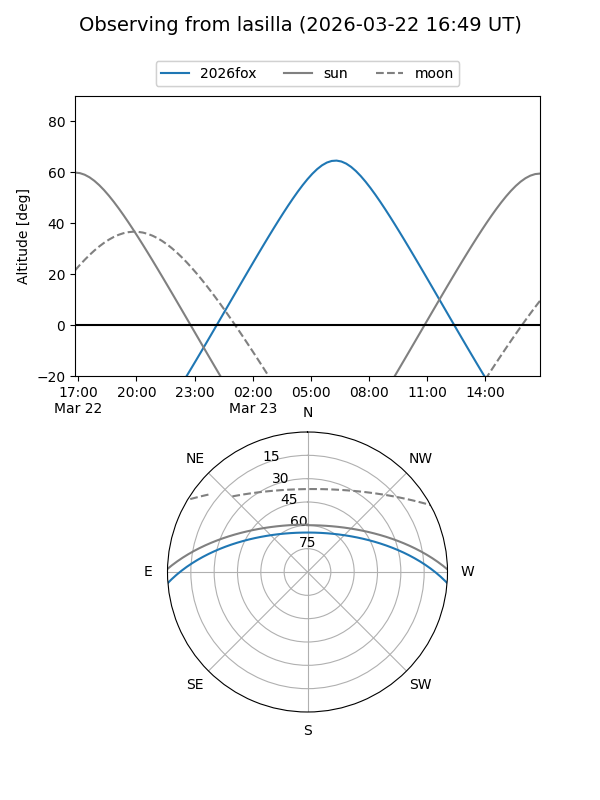
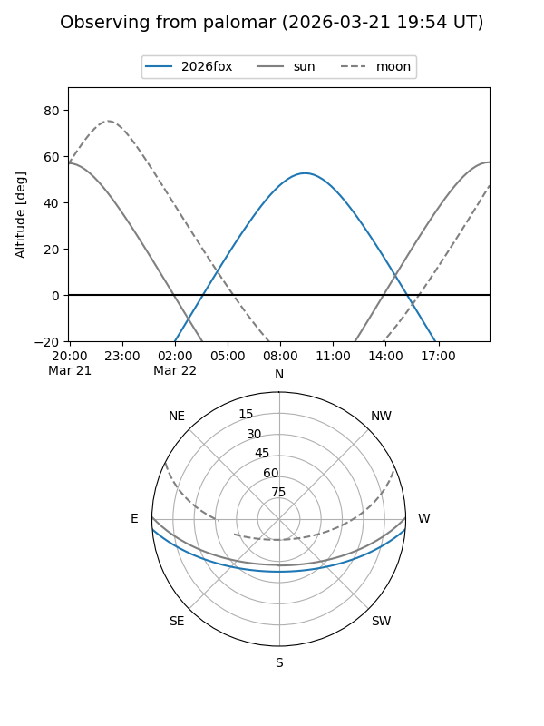
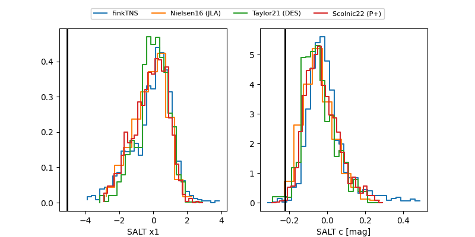

2026fox
Target 2026fox at 2026-03-22 12:11
Aliases and brokers:
FINK: link
Lasair: link
ALeRCE: link
TNS: link
YSE: link
alt names
ZTF26aakkbwd (ztf,fink_ztf)
2026fox (tns,yse)
Coordinates:
equatorial (ra, dec) = 203.7318,-3.75467
equatorial (HMS+DMS) = 13:34:55.64,-03:45:16.80
galactic (l, b) = (323.3683,+57.38133)
Flags:
Photometry:
last ztfg=20.26, ztfr=20.05
4 ztfg, 4 ztfr detections
Lightcurve

Visibility


Additional plots
